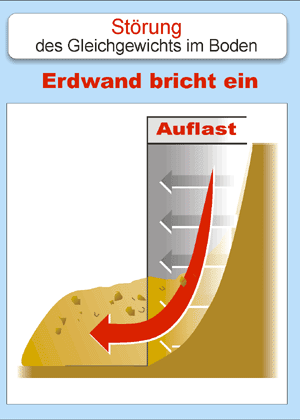

Störung des Gleichgewichts im Boden
Eine Grube oder ein Graben stört das Gleichgewicht des Bodens. Der Erdruck muss umverteilt werden:
- durch abgeböschten (dreieckigen) Aushub,
- durch Verbau (rechteckig durch Erddruckumlagerung).


Eine Grube oder ein Graben stört das Gleichgewicht des Bodens. Der Erdruck muss umverteilt werden: